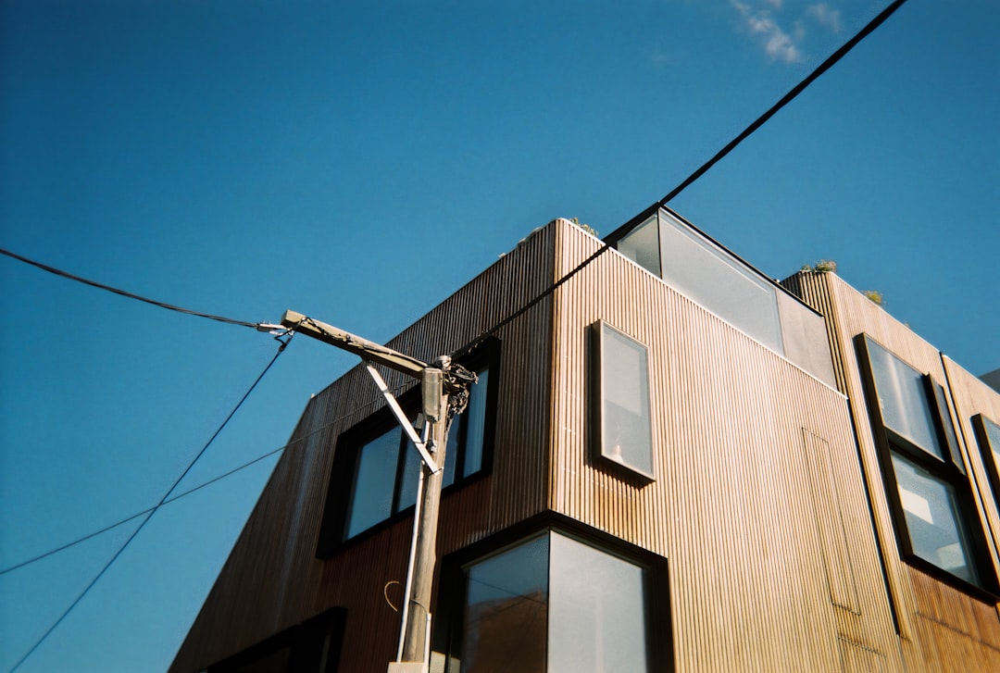

Melbourne bathroom planning should start with room type, layout change, waterproofing, access and finish level. The source gives a typical full project range of about $8,000 to $35,000, with premium custom work able to exceed $35,000, and cites an Australian average spend of around $26,000. A quote-ready brief should state the bathroom type, suburb, rough scope, layout changes and any apartment or access issue.
For homeowners comparing bathroom renovations melbourne options, the useful starting point is whether the room, building access and waterproofing scope are already clear.
Bathroom Renovations Melbourne Explained
Melbourne Bathroom Renovations frames early planning around the actual room problem. A tired family bathroom, a leaking room, a cramped ensuite and an apartment wet area with access limits are different quote conversations.
Describe the bathroom type, suburb, rough scope, current frustration, layout changes and anything unusual about access or approvals. Those details help sort whether the next move is a full quote, cost review, apartment approval discussion or layout rethink.
- Complete renovation: useful when the room is tired, leaking or impractical.
- Ensuite: a compact planning task involving storage, ventilation and layout.
- Small bathroom: clearances and space use need early checking.
- Apartment bathroom: access and owners-corporation issues may need discussion before pricing.
Cost Signals To Clarify Before Quotes
The source gives a Melbourne full bathroom renovation range of about $8,000 to $35,000. Budget makeovers sit toward the lower end, while custom designs with premium tiles, stone benchtops and high-end tapware can exceed $35,000. It also cites Housing Industry Association data putting average Australian bathroom renovation spend at around $26,000.
Use those figures as planning anchors. The source names size, layout changes, fixture and finish quality, labour, waterproofing, plumbing and electrical work as cost drivers. Quotes can also be affected by trades availability and compliance requirements.
Before asking for prices, write down what is staying and what is moving. A like-for-like update may still need demolition, waterproofing, tiling and fit-off. A layout change can alter plumbing and electrical assumptions. For another editorial view of the same planning topic, see this Melbourne bathroom renovation guide.
Compliance, Scope And Written Assumptions
Wet-area compliance sits near the front of the source material. It says projects are reviewed with renovators who plan waterproofing, plumbing and electrical scope before fit-off decisions are locked in. It also says the quoting contractor sets out scope, exclusions and quote assumptions in writing before a homeowner commits.
Ask direct scope questions. Is the job a complete strip-out or a partial upgrade? Is waterproofing included? Are plumbing and electrical changes expected? Which fixtures, tiles, cabinetry, ventilation and storage decisions are included? Which items are excluded or provisional?
Industry bodies such as the Housing Industry Association and Master Builders Australia provide broader renovation and building-industry context, while ASIC Moneysmart has consumer guidance on renovating and budgeting. For one bathroom, the quote still needs to match the room and the inclusions.
Who This Applies To
This guide is most relevant to Melbourne homeowners who know the bathroom needs work but have not translated that into a quote-ready scope. The source mentions premium family homes, apartments, terraces and compact bathrooms. It gives examples of a South Yarra apartment bathroom with owners-corporation friction, a Glen Waverley family ensuite and a Brighton premium full-bathroom rebuild.
For apartment owners, raise access, approvals, trade entry, work areas and waste removal. For compact bathrooms and terraces, check clearances before choosing fixtures. For family homes, storage, ventilation, finish durability and daily use sit beside the visual redesign. For premium rebuilds, finish quality still needs to be checked against waterproofing, plumbing and electrical assumptions.
What To Send Before Review
A concise brief can make the first contractor conversation more useful. Include the suburb or postcode, bathroom type, current frustration, rough scope, whether the layout changes, and any apartment, access or approval complication. Add whether the job is mainly cosmetic, a waterproofing or tiling concern, a compact ensuite redesign, a full renovation, an accessibility change, or part of linked laundry and powder-room work.
Photos and measurements can help describe the starting point. Capture the shower, vanity, toilet, window, ventilation point, door swing, storage, floor area and any visible leak or tile issue. If the property is an apartment, note lift access, parking, owners-corporation requirements and any known work-hour limits for the contractor to check.
Start with decisions that affect trade sequencing and quote structure: demolition, waterproofing, plumbing, electrical, tiling, ventilation, cabinetry, storage and fit-off. Then select tiles, tapware, benchtops and other finishes with better budget context.
Quote Comparison Without Guesswork
Comparing quotes is difficult when each contractor has priced a different version of the job. A lower number may exclude work another quote includes. A higher number may reflect layout change, licensed trades, access constraints, better finishes or more complete assumptions. The source says labour is a large share of cost where waterproofing, plumbing or electrical work is involved.
Read each quote beside the same checklist. Confirm the bathroom type, demolition, waterproofing, plumbing, electrical, tiling, ventilation, cabinetry, fixtures, exclusions, quote assumptions and any approval or access dependency. Ask whether the quote keeps the existing layout or changes it, which selections are fixed, which remain allowance-based, and what happens if hidden conditions are found after demolition.
- Define the room type. State whether the job is a full bathroom, ensuite, small bathroom, apartment wet area or linked laundry and powder-room project.
- List constraints first. Record access, approval, layout, waterproofing, plumbing and electrical questions before selecting finishes.
- Set a cost frame. Use the cited $8,000 to $35,000 range and $26,000 Australian average as planning anchors, then test the actual scope.
- Request written assumptions. Ask the quoting contractor to document inclusions, exclusions and assumptions before you compare prices.
| Situation | Early question | Why it changes the quote |
|---|---|---|
| Complete renovation | Is the room being stripped back and rebuilt? | Demolition, waterproofing, tiling, fixtures and fit-off may all sit in scope. |
| Ensuite upgrade | Can storage, ventilation and layout improve within a compact footprint? | Small changes can affect clearances and service locations. |
| Apartment bathroom | Are access or owners-corporation issues likely? | Approval, access and work logistics may need to be raised before quoting. |
| Premium rebuild | Are finish expectations already defined? | Tiles, stone benchtops, tapware and custom details can push cost higher. |
Common questions
How much does a Melbourne bathroom renovation cost? The source says a full bathroom renovation in Melbourne typically falls between about $8,000 and $35,000, depending on size, layout changes and fixture or finish quality. Custom designs with premium tiles, stone benchtops and high-end tapware can exceed $35,000.
Why can two bathroom quotes be far apart? They may not cover the same scope. The source points to labour, waterproofing, plumbing, electrical work, compliance requirements, trades availability, layout changes and finish quality as cost drivers.
What details should I prepare before asking for a quote? Prepare the suburb, bathroom type, rough scope, current frustration, whether the layout changes, and any apartment, access or approval issue. Those are the inputs the source page asks homeowners to provide for review.
Is an apartment bathroom different from a house bathroom? It can be. The source gives the example of a South Yarra apartment bathroom with owners-corporation friction, so access and approvals may need earlier discussion than they would for some houses.
This guide covers bathroom renovation planning, scope, cost signals and quote questions for Melbourne homeowners using the supplied source page.